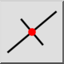
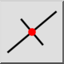
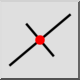
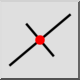

Orthogonale
Barre d'outil / icône :
 

Menu : Dessin > Ligne > Orthogonale
Raccourci : L, O
Commandes : lineorthogonal | lo
Ceci est une traduction automatique.
Barre d'outil / icône :
 

Menu : Dessin > Ligne > Orthogonale
Raccourci : L, O
Commandes : lineorthogonal | lo
Cet outil vous permet de créer des lignes orthogonales à une entité de base existante. L'entité de base peut être une ligne, un arc ou un cercle.